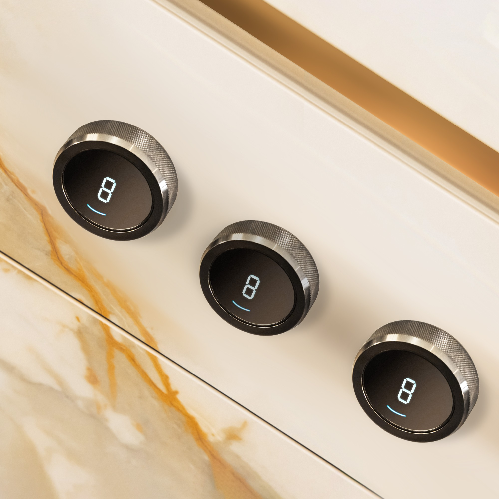

London · Bespoke kitchen
Tansley
Farm.
Project 02 / Tactile utility
Useful beauty.
Rich detail.
A practical kitchen language softened by tactile finishes, warm metalwork and details made to be lived with.
A Nura principle